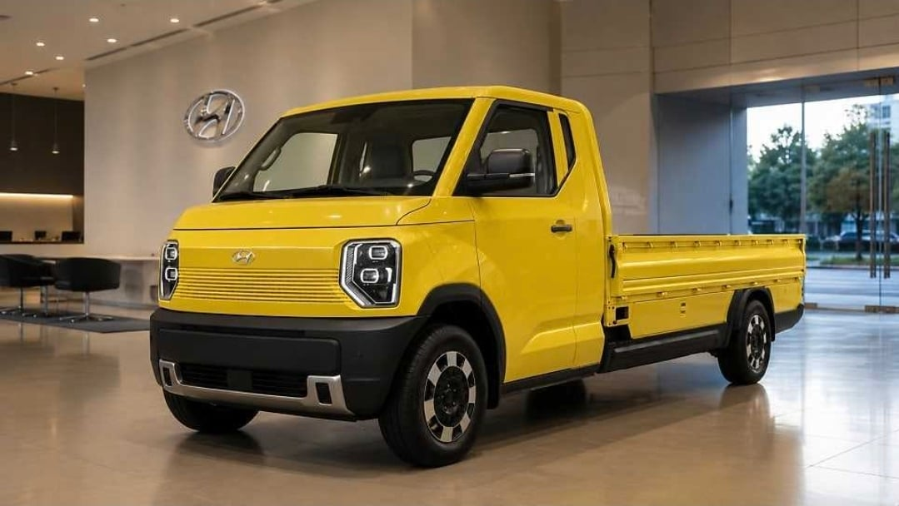
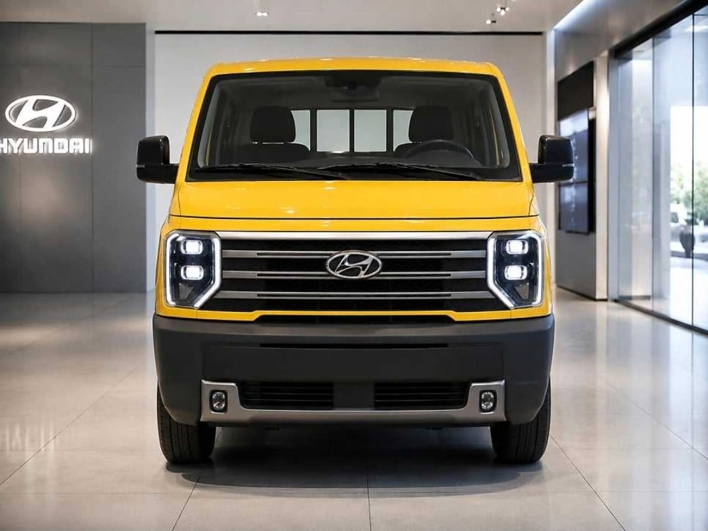
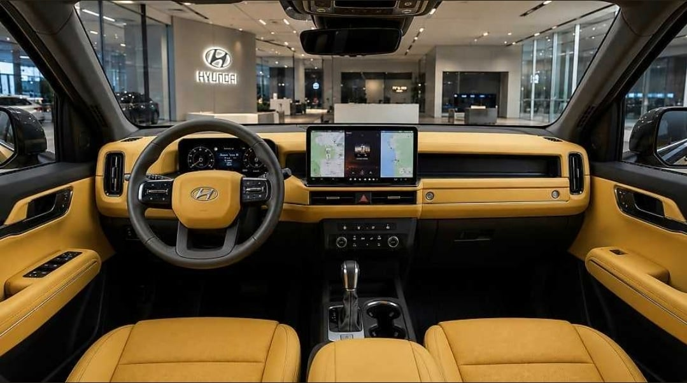
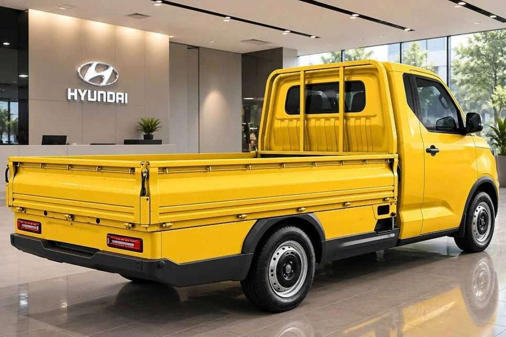
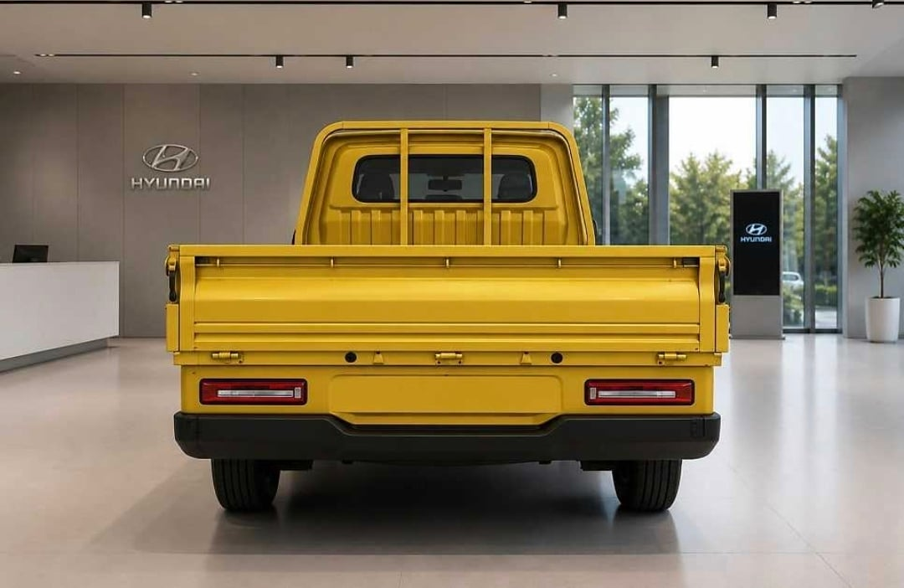
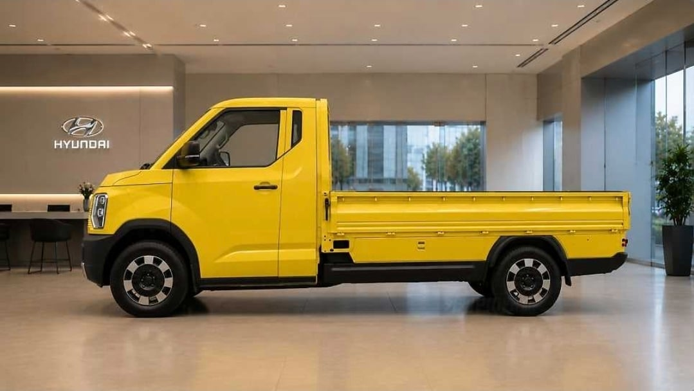

내년 부터 보닛 없는 캡오버 트럭 판매 금지이기 때문에 풀체인지 포터로 출시
제원은 아직 모름
소형 트럭만 적용






내년 부터 보닛 없는 캡오버 트럭 판매 금지이기 때문에 풀체인지 포터로 출시
제원은 아직 모름
소형 트럭만 적용
포터르기니 무얼싣을라고
일본차 느낌 나네 ㅋㅋ
얘들아 이거 ai인거 잘 모르겠으면 배경 디테일을 봐라.
애초에 포터 전면 그릴 모양이랑 휠 형태 바뀌는 것부터 수상하고 조수석 쪽 손잡이가 생겼다가 사라졌다하는 점이나 적재함 보호대(헤드렉) 부분이 2줄이었다가 3줄이었다가 아예 없어지기도 함. 내장에는 엔진 스타트 버튼도 없고 계기판 글자 디테일도 다 뭉개져있고...근데 이것들 전부 눈치 못 채도 괜찮음
배경이 시발 걍 다 뭉개져서 알아볼수도 없고 의자 다리는 시발 거미마냥 8개가 달려있지 않나 사람 형체를 한 괴물도 있고 배경에 전시된 차는 피카소마냥 측면과 후면이 같이 보이질 않나
진짜 늙기 싫으면 이런거 해야한다
오, This 친절한 개붕쿤이 아니었다면 난 이것이 전혀 AI사진인 줄 꿈에도 모를!
실내는 모르겠지만 외관은 그동안 유출된거로 추정한 디자인임
그리거 배경마다 다 현대로고가 있었어!!
배경마다 현대로고가 있는 이유는 그냥 프롬프트에 그렇게 썼기때문이지 ㅋㅋ
3톤 적재 가능?
캠핑카로 개조하기 적합한 모양같다
뭐냐 이 AI로 만든거같은 중국산 택갈이 트럭은
뒷바퀴 보면 누가봐도 구라 아닌가
존나 비싸질거같은 예감...
배경에 있는 현대로고 때문에 ai같네 ㅋㅋ
진짜 ai였내
휠이 짤마다 다르길래 뭔가했더니 ai냐
ㅂㅁ
ai느낌 풀풀 나는데 검수도 안하고 그냥 들고오냐
포타가 너무 고급지네
뭐냐 이 숭한 모양은..
오~ 예쁘다.
탑차로 나오면 사서 캠핑카로 개조하고 싶어.
무슨 짱1ㄲㅐ차인줄
귀여웡 ㅋㅋㅋ
스타리아 디자인으로 짐칸만 떼오면 완성아님?
머더러 디자인을 새로하겄어 애초에 맞는 디자인도 아닌거같긴하지만
그런식으로 개발한 게 ST1이라고 선례가 있긴 함(이건 저상형 택배차이지만)
리베로 부활!!
그럼 초장축 모델을 만들 수가 있나?
ai인건 알겠는데 왜 시바 노란색인거야 존나 중티나게 ㅋㅋㅋ
차체가 너무 낮은데 일반 현장에서는 못쓸듯
Ai잔아
그 크럼블존 없어서 사고나면 하체 병신되는거 막으려고 강제하는건가? 좋네...
는 시발 사진 ai 좆같은ㅋㅋㅋㅋ
진짜 저렇게 나오면 6톤은 싣겠다
괜찮긴한데 녹스는 문제는 해결되었나?